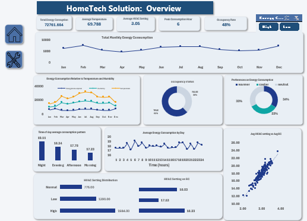

This project analyzes IoT sensor data from 169 smart rental apartments managed by HomeTech Solutions to identify opportunities to improve energy efficiency, reduce operational costs, and enhance tenant comfort.
Despite deploying smart home technologies, property managers lacked clear visibility into how HVAC settings, tenant occupancy, and daily usage patterns influenced energy consumption and maintenance demand across rental units.
Using Excel-based analytics, I transformed raw sensor and maintenance log data into an interactive dashboard that monitors energy usage trends, tenant behavior patterns, and maintenance activity across the rental portfolio. The dashboard provides property managers with actionable insights to optimize HVAC usage, detect inefficiencies, and plan proactive maintenance interventions.
HomeTech Solutions manages 169 smart rental apartments equipped with IoT sensors that monitor energy usage, environmental conditions, and equipment performance.
Analysis of the sensor data reveals total energy consumption of approximately 72,761 units, with an average indoor temperature of 69.8°F and an average HVAC setting of 3.05. The system also recorded 345 maintenance requests, with the highest number of requests (13) originating from Unit U493.
The dashboard highlights clear relationships between HVAC usage, occupancy patterns, and energy consumption, as well as operational insights regarding maintenance demand. These insights allow property managers to identify inefficiencies, reduce unnecessary energy usage, and proactively manage equipment maintenance.
Seasonal Energy Patterns: Energy consumption varies throughout the year, with higher demand during periods requiring greater heating or cooling. Consumption increases between spring and summer months, indicating heavier HVAC usage during warmer periods.
Time-of-Day Usage Trends: Energy usage peaks during evening and night hours (37.35 average units of consumption), reflecting typical residential behavior when tenants return home and energy-intensive appliances and HVAC systems are used more frequently.
HVAC Settings and Energy Demand: There is a strong positive relationship between HVAC settings and energy consumption. Units operating under "High" HVAC settings consume an average of 23.65 units, compared with just 9.75 units for "Low" settings, highlighting HVAC usage as the primary driver of energy demand across the rental portfolio.
Occupancy Impact: Apartment units that are occupied show substantially higher energy consumption, confirming that tenant presence strongly influences energy demand and HVAC usage.
Maintenance Volume: Across the monitored apartments, 345 maintenance requests were recorded during the analysis period.
Top Issues: HVAC failures dominate the maintenance logs, accounting for 44% (153 cases) of all issues. This is followed by filter replacements (88 cases) and thermostat failures (54 cases).
Seasonal Trends: Maintenance requests spike in January to April and October to December. These periods coincide exactly with peak energy consumption, suggesting that heavy HVAC usage places additional strain on equipment leading to higher failure rates.
Resolution: 82% of issues required part replacements, indicating that problems are mechanical failures rather than simple cleaning tasks.
High-Risk Units: Unit U493 recorded the highest number of maintenance requests (13), indicating potential equipment inefficiency or aging infrastructure that may require further inspection.
I developed an AI Knowledge Base to democratize access to these insights. Staff can simply ask the system:
Action: Implement HVAC ranges or smart thermostat limits to discourage "High" settings, which consume 2.4x more energy than "Low" settings.
Action: Schedule pre-emptive HVAC checks before peak seasons in September and December, to reduce system failures and improve equipment lifespan.
Action: Encourage automated scheduling or tenant awareness programs to reduce energy consumption during peak evening hours(37.35 units of usage).
Action: Investigate Unit U493 (highest maintenance count) for potential equipment aging or insulation issues.
The data confirms that HVAC usage and tenant occupancy patterns are the primary drivers of energy consumption across HomeTech’s rental units. By shifting from reactive repairs to predictive maintenance based on seasonal energy spikes, and by using the AI assistant to monitor anomalies in real time, the company can significantly extend asset lifespans and improve tenant satisfaction. Adopting data-driven energy management strategies, combined with predictive maintenance and tenant awareness initiatives, can significantly improve operational efficiency while maintaining tenant comfort. This analytics framework provides HomeTech Solutions with a scalable approach for managing smart residential properties more sustainably.